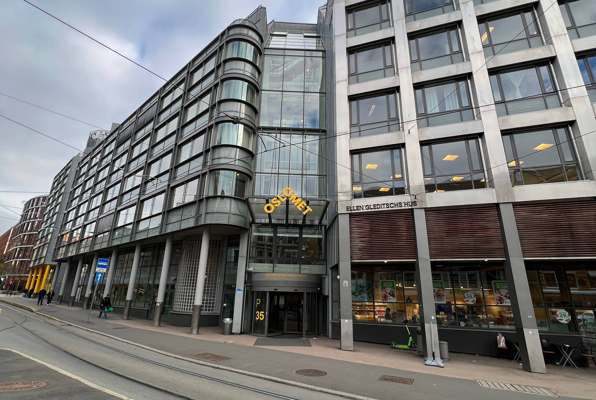

OsloMet
OsloMet-Metropolitan University is a university located in Oslo, the university offers a large quantity of different academic educations that they offer students. Many of the courses they offer are future-oriented education that will help drive innovation in society.
OsloMet has 20,000 students attending the university. It is one of the country's largest schools with all different study paths that give students the choice to choose freely of what interests them. All these choices of school make OsloMet a major challenger when it comes to school choice in Norway.
OsloMet has several Research programs that help society to move forward with new methods to solve life's tasks. By implementing different aspects of technology, life will me made easier for people.
Photo: Sander Sletvold
Welcome
Take the time to explore our site. You can read about OsloMet's lecture hall, climbing wall, fake news and accessibility. These two places at OsloMet are two important places for our group, these places at school help students with learning and physical activity. Physical activity is extremely important for moments, it is extremely easy for IT moments and becoming too stagnant this easily affects our physical and mental health. This can lead to a higher likelihood of depression and dropping out of study. The lesson hall is important because it is where the teacher teaches us the academic we need to grow as students. The combination of these two important places at OsloMet makes it the two most important places in the school in our opinion.